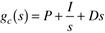
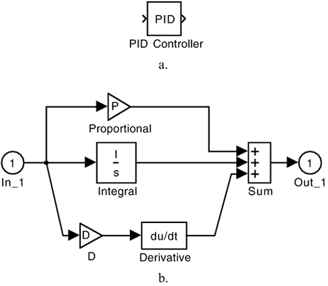
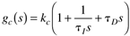
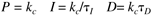
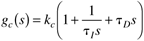
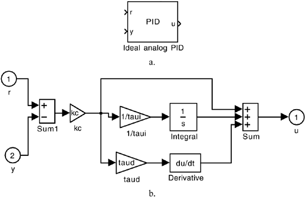

| [ Team LiB ] |
|
M2.4 Developing Alternative Controller IconsIt was noted earlier that the default SIMULINK PID controller block uses a form different from that used by most process engineers. It is easy to generate new PID controller blocks as shown below. The default PID controller icon is shown in Figure M2-13a. This is "unmasked" (by clicking the icon and selecting 'Look under mask' from the Edit pull-down menu) to yield the diagram shown in Figure M2-13b. Again, this has the form  Figure M2-13. Default ideal PID controller. (a) Block. (b) Block unmasked. while we normally prefer the following PID structure:  Of course, the two algorithms are related by  but it would be much less confusing to work with our standard form. We have generated a new ideal analog PID, as shown in Figure M2-14a. Notice that there are two inputs to the controller, the setpoint (r) and the measured output (y), rather than just the error signal that is the input to the default SIMULINK PID controller. Our new implementation is unmasked in Figure M2-14b to reveal that  Figure M2-14. Preferred implementation of ideal PID controller. (a) Block. (b) Unmasked block. is the algorithm used. |
| [ Team LiB ] |
|